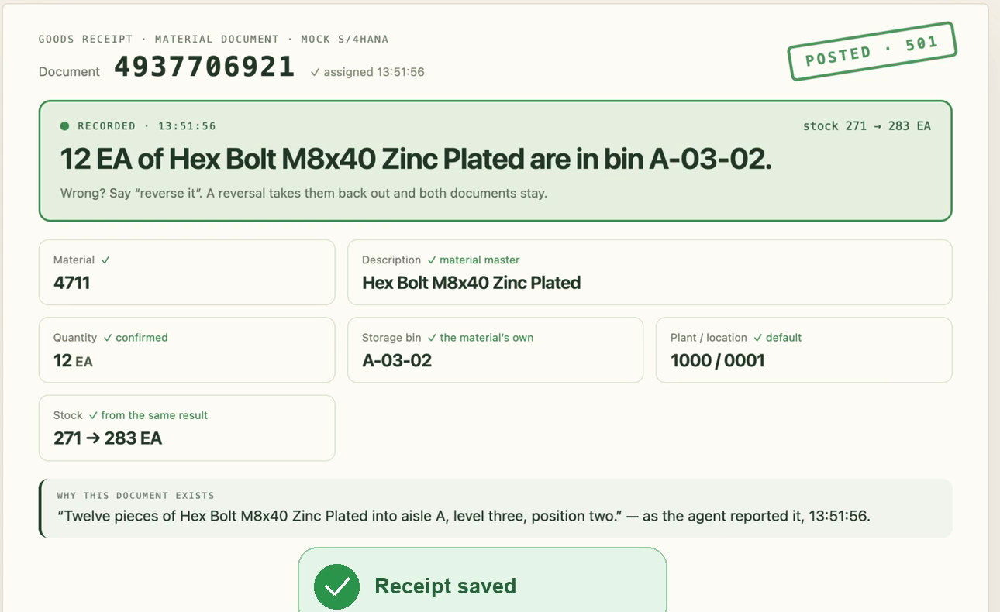

04 · THE SOLUTION
04 · THE SOLUTION
 05 · SEE IT WORK
05 · SEE IT WORK

Material document 4937706921, movement 501, stock 271 → 283 — recorded through SAP's released OData path into the demo's mock S/4HANA, after the worker corrected twenty to twelve during the read-back.
The read-back names the description, not just the number — which is what lets a worker catch they are holding nuts, not bolts.
The card carries the sentence that caused the document. An earlier run, document 4922857164 with its refused duplicate and its reversal, is kept as JSON in receipts/.
 06 · THE DISCIPLINE
06 · THE DISCIPLINE
Quantity, unit, material description, bin. The description is load-bearing.
The gateway validates the exact draft. Spoken consent is reported by the agent; results appear only after the tool returns.
The same receipt within two minutes is caught — by a guard in the gateway, because real S/4HANA would accept it twice.
A wrong receipt gets a reversal document, 102 against a 101. Both stay, because that is what a ledger is.
Click a posted row: the sentence the worker confirmed, and the second it happened.
 08 · BUILT ON ASSEMBLYAI
08 · BUILT ON ASSEMBLYAI
 10 · MARKET & COST
10 · MARKET & COST
voice-directed warehousing today · ~14–17%/yr (analyst estimates, cited as a range)
incumbent cost per user, hardware + software
GlovesOn per-seat hardware — a browser and a headset. Voice: $0.075 per connected minute.
12 · EVIDENCE
X-CSRF-Token: Fetch handshake, A_MaterialDocumentHeader, movement types 101 / 102github.com/kosesena/GlovesOn — 281 commits since 5 Sept, 97 tests, CI green, MITreceipts/ — 13 steps of one real run: document 4922857164 posted, the same receipt refused, then reversed/api/provenance/4922857164 — the sentence that caused the documentdocs/adr/ — six decisions, each with the option rejected and its cost